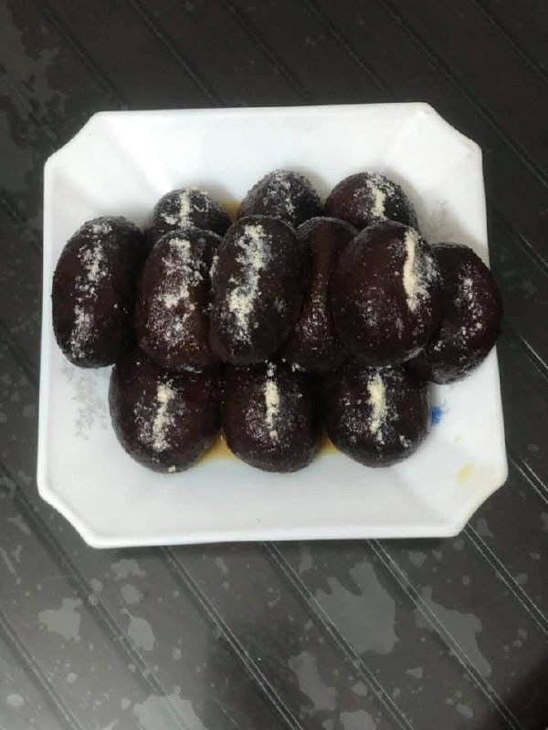

Kala Jamun
Kala Jamun is a deeper, darker cousin of the classic Gulab Jamun — soft, juicy, and soaked in aromatic sugar syrup. Its rich color and heavenly taste make it a festive favorite!
Ingredients
- 1 cup khoya (mawa)
- 3 tbsp all-purpose flour (maida)
- 2 tbsp milk (as needed to knead)
- 1/4 tsp baking soda
- Oil or ghee for deep frying
- 1 cup sugar
- 1 cup water
- 1/4 tsp cardamom powder
- Few drops of rose water or saffron strands (optional)
Instructions
- Prepare sugar syrup: In a pan, mix sugar and water. Bring to a boil, then simmer for 5-7 minutes until slightly sticky. Add cardamom powder and rose water. Keep warm.
- Make the dough: In a bowl, mash khoya well to remove lumps. Add maida and baking soda, mix gently.
- Knead softly: Add milk little by little and knead into a smooth, soft dough. Rest it for 10 minutes.
- Shape jamuns: Divide the dough into small balls and shape them smooth. Ensure there are no cracks.
- Fry: Heat ghee or oil on low flame. Fry the jamuns gently, stirring continuously until they turn dark brown to almost black — that's how they get their signature “Kala” color.
- Soak: Immediately drop the fried jamuns into warm sugar syrup. Let them soak for at least 2 hours to absorb all the sweetness.
- Serve: Garnish with chopped pistachios or silver leaves and serve warm or at room temperature.
Tip: To get perfect soft Kala Jamun, fry them on very low heat. The inside should cook slowly while the outside darkens beautifully. Serve with a scoop of vanilla ice cream for a divine fusion dessert!